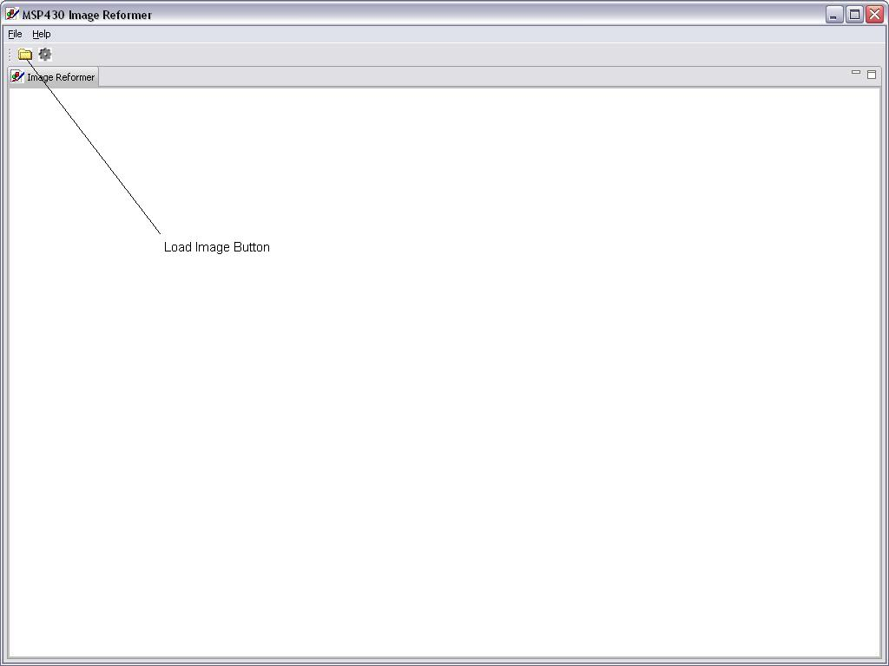
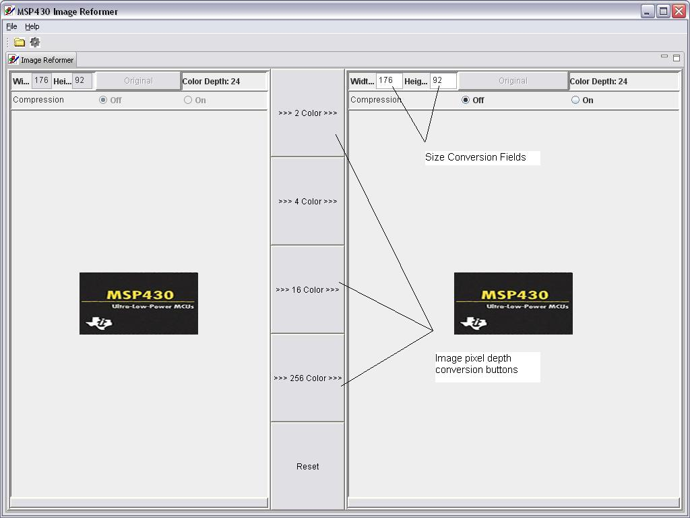

Converting An Image
From the Image Reformer main
screen press the Open Image Icon or File->Open. This will
bring up all the available image files in your root directory.
Navigate to the location of the image to load and double click or
select and press "Open".

Types of Conversion
Select the pixel depth conversion and size of the image to generate based on the display parameters you are using.

Compression
Compressed
images will use less memory to display and generally display faster but
will require a bit more processing. Depending on the
requirements compression is available. For 1,2,4 bits per pixel
RLE4 compression is used. For 8 bits per pixel, RLE8 is used.